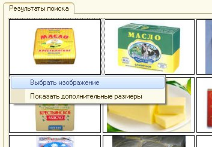

Обработка "Поиск картинок"
Для поиска изображения необходимо проделать следующие шаги:
В результаты поиска выводится 20 изображений (4x5)

Чтобы прикрепить изображение к конкретной позиции номенклатуры необходимо нажать на нужном изображении и указать пункт меню "Выбрать изображение", либо перетащить изображение, зажав правую кнопку мыши. Затем необходимо нажать кнопку "Сохранить изменения"
Если в качестве поисковой системы выбран Яндекс, то для изображения будет доступен выбор дополнительных размеров.
Когда обработка запускается в веб-клиенте, то меню выбора изображения и дополнительных размеров не удастся вызвать с помощью мыши. Для этого необходимо будет выбрать изображения с помощью стрелок на клавиатуре и нажать клавишу Enter. Перетаскивание изображение в веб-клиенте так же недоступно.